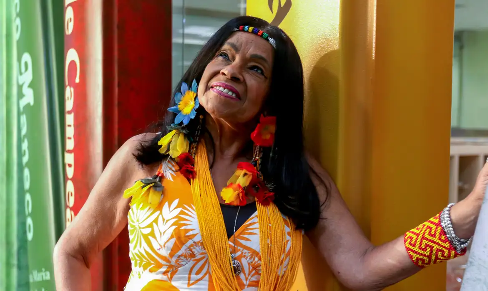
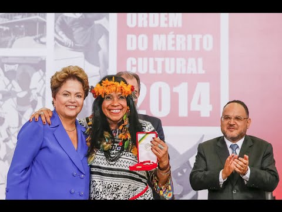
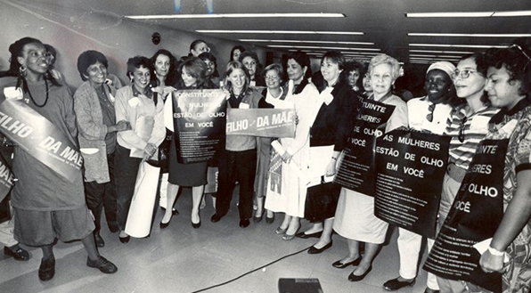
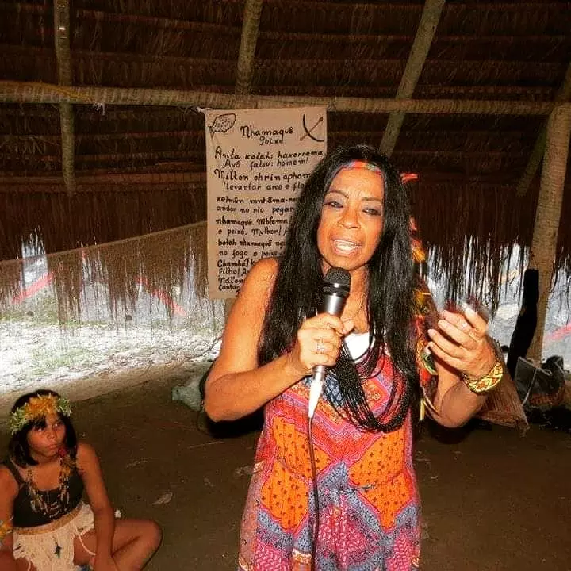
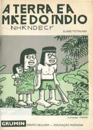
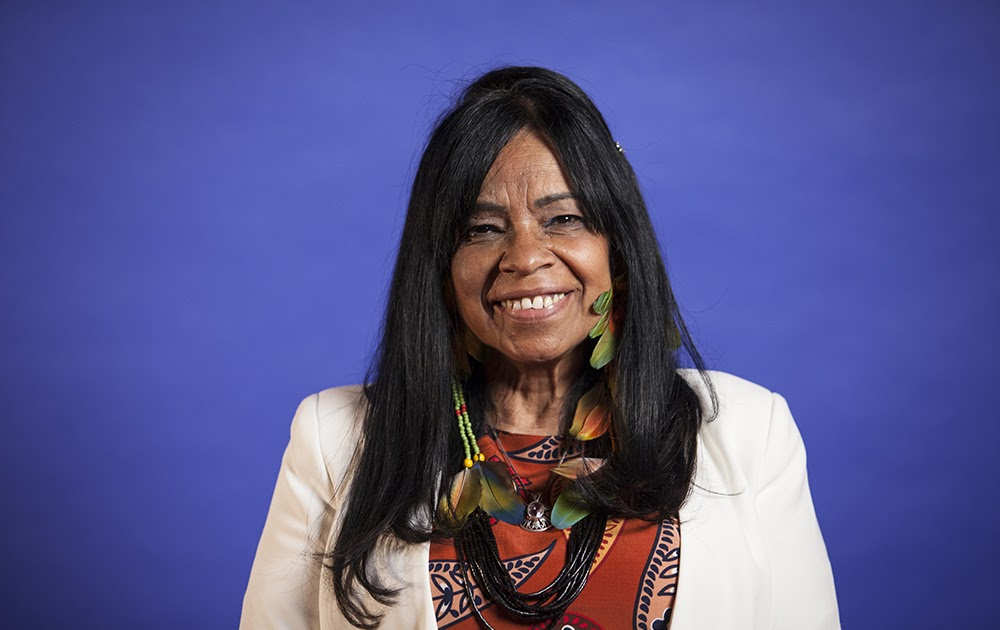
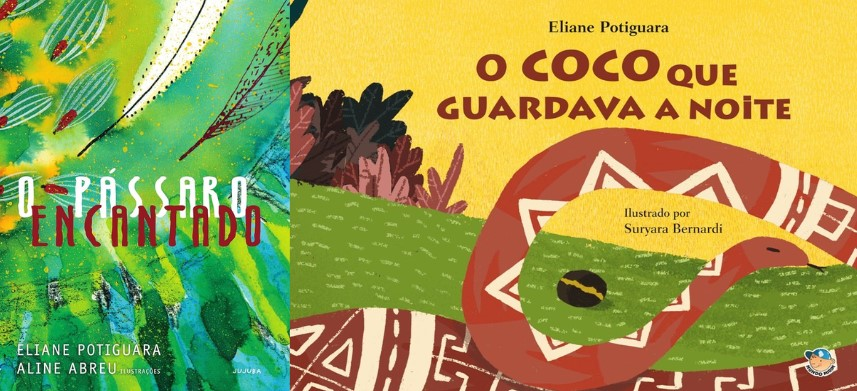
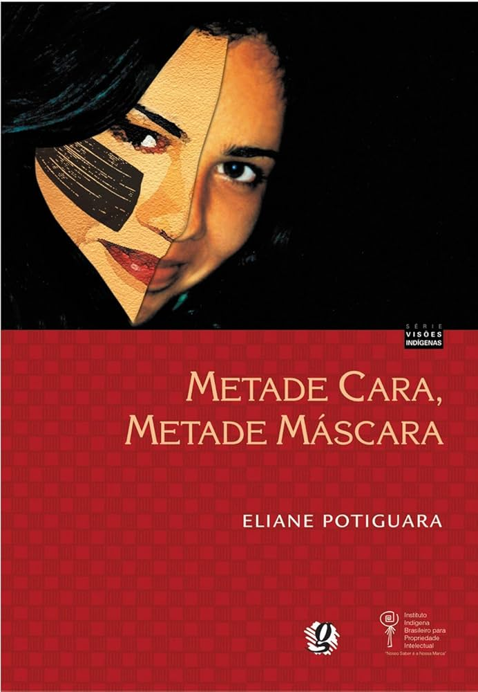

Eliane Potiguara
"Estar em estado de liberdade é estar em estado de existência na paz, mas só se consegue esse estágio quando a luz interna está acesa, límpida e conectada com a verdade, sabedoria, compromisso, tolerância e respeito ao próximo."
BIOGRAFIA
Eliane Potiguara nasceu dia, 29 de setembro de 1950, no Rio de Janeiro, é uma escritora indígena, professora, poeta, contadora de histórias, mãe e avó, de origem étnica Potiguara. Ela é fundadora do GRUMIN (Grupo Mulher-Educação Indígena), criado em 1988, e membro fundadora do ECMIA (Enlace Continental de Mujeres Indígenas).
Eliane foi indicada para o Projeto Mil Mulheres para o Prêmio Nobel da Paz e recebeu a Ordem ao Mérito Cultural do Ministério da Cultura em 2014.
Formada em Letras (Português-Literatura) com licenciatura em Educação pela Universidade Federal do Rio de Janeiro (UFRJ) e com especialização em Educação Ambiental pela Universidade Federal de Ouro Preto (UFOP), Eliane participou de várias palestras sobre Direitos Indígenas organizadas pela ONU, por organizações governamentais e ONGs, tanto a nível nacional quanto internacional.
Eliane Potiguara foi reconhecida como uma das “Dez Mulheres do Ano de 1988” pelo Conselho das Mulheres do Brasil, por fundar a primeira organização de mulheres indígenas no país, o GRUMIN (Grupo Mulher-Educação Indígena). Ela se destacou por seu trabalho na educação e integração das mulheres indígenas no contexto social, político e econômico do Brasil, além de contribuir para a elaboração da Constituição Brasileira de 1988.
Em 1990, Eliane se tornou a primeira mulher indígena a obter uma petição no 47º Congresso dos Índios Norte-Americanos, no Novo México, para ser apresentada às Nações Unidas. Esse congresso contou com a participação de mais de 1.500 indígenas. Por isso, ela participou durante anos da elaboração da “Declaração Universal dos Direitos Indígenas” na ONU, em Genebra. Em reconhecimento a esse trabalho, ela recebeu, em 1996, o título de “Cidadania Internacional”, concedido pela filosofia iraniana “Baha’i”, que promove a Paz Mundial.
Eliane criou uma cartilha de alfabetização indígena baseada no método Paulo Freire, com o apoio da Unesco.
Defensora dos Direitos Humanos, Eliane Potiguara organizou diversos encontros e criou o primeiro jornal indígena, além de boletins conscientizadores. Adição: Em 1991, organizou um encontro histórico de mais de 200 mulheres indígenas em Nova Iguaçu/RJ, com a participação de Baby do Brasil e outros líderes indígenas. Eliane também organizou diversos cursos sobre saúde e direitos reprodutivos das mulheres indígenas e atuou como consultora em outros encontros sobre o tema.
Em 1992, ela cofundou o Comitê Inter-Tribal 500 Anos durante a Conferência Mundial da ONU sobre Meio Ambiente.
Eliane discutiu a questão dos direitos indígenas em vários fóruns nacionais e internacionais, governamentais e não governamentais, abordando diversas diretrizes e estratégias de ordem político-econômica. Em 1999, ela participou do fórum sobre o Plano Piloto para a Amazônia, realizado em Luxemburgo. Participou de 56 fóruns internacionais e mais de 100 nacionais, culminando na Conferência Mundial contra o Racismo na África do Sul em 2001 e em Paris em 2004.
No final de 1992, Eliane Potiguara foi premiada pelo PEN CLUB da Inglaterra (Fundo Livre de Expressão dos EUA) por seu espírito de luta, refletido em seu livro “A Terra é a Mãe do Índio”. Na mesma época, ela e Caco Barcelos (“Rota 66”) foram citados na lista dos “Marcados para Morrer”, anunciada no Jornal Nacional da Rede Globo, por denunciarem esquemas duvidosos e violações dos direitos humanos e indígenas.
Em 1995, na China, durante o Tribunal das Histórias Não Contadas e Direitos Humanos das Mulheres na Conferência da ONU, Eliane narrou a história de sua família, que emigrou das terras paraibanas nos anos 1920 devido à violência dos neo-colonizadores. Ela descreveu as consequências físicas e morais dessa violência para a dignidade histórica de seu bisavô, Chico Solón de Souza, seus avós e descendentes.
No último governo, Eliane foi Conselheira da Fundação Palmares/Minc, é FELLOW da organização internacional ASHOKA, dirigente do GRUMIN e membro do Women’s Writers World.
Desde 2000, Eliane tem participado de centenas de seminários, feiras literárias, bienais do livro, atividades e palestras do Sesc, além de eventos em universidades e escolas por todo o Brasil. Participou de inúmeros seminários e eventos literários, como feiras literárias e bienais do livro, entre 2000 e 2018.
Eliane foi nomeada Embaixadora Universal da Paz em Genebra, em 2011.
Em 2012, publicou o livro infantil "O Coco Que Guardava a Noite" e "O Pássaro Encantado" em 2014.
Em 2018, seu livro “Metade Cara, Metade Máscara” foi adotado pelo Projeto “Mulheres Inspiradoras”, coordenado pela Profª Gina Vieira Pontes, onde centenas de escolas de Brasília e Mato Grosso do Sul receberam mais de 1000 exemplares.
Foi homenageada em 10/01/2024 pela Maurício de Sousa Produções (Turma da Mônica) no Projeto Donas da Rua.
Esta é a biografia de Eliane Potiguara, uma das mais influentes vozes indígenas do Brasil, é uma escritora, educadora e ativista indígena, conhecida por sua luta pelos direitos dos povos indígenas, especialmente das mulheres. Fundadora do GRUMIN e participante de fóruns internacionais, Eliane tem contribuído para a preservação das culturas indígenas e a promoção da justiça social. Sua trajetória inclui diversas premiações, publicações literárias e um forte compromisso com a educação e os direitos humanos.